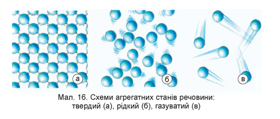

Фізичні властивості
Чиста вода — безбарвна прозора рідина, без запаху і смаку. На землі вода існує в трьох агрегатних станах — твердому, рідкому та газоподібному. За нормального атмосферного тиску при 0°С вона замерзає і перетворюється у лід, а при 100°С — кипить, перетворюючись у пару. У газоподібному стані вода існує і за нижчої температури, навіть нижче 0°С. Тому лід і сніг теж поступово випаровуються.
У рідкому стані вода практично не стискається, при замерзанні розширюється на 1/11 від свого об'єму.
Найбільшу густину вода має при +4°С. Масу 1 см³ чистої води при цій температурі прийняли за одиницю і назвали грамом (сучасне визначення грама основане на точнішому еталоні). На відміну від інших рідин, вода при охолодженні від + 4 до 0°С розширюється. Тому лід легший від води (на 8 %) і не тоне у ній. Завдяки цьому, а також малій теплопровідності шар льоду захищає глибокі водойми від промерзання до дна, і цим забезпечується у них життя.
Потрійна точка води, тобто умови, за яких одночасно у рівноважному стані можуть співіснувати вода, лід та пара, реалізується при температурі 0,01 °C і тиску 611,73 Па. Значення 0,01 °C точне — на ньому основане визначення одиниці вимірювання температури в Міжнародній системі (СІ), кельвіна. Проте відповідно до запропонованих змін у СІ, коли значення сталої Больцмана та числа Авогадро буде зафіксовано, температура потрійної точки води буде визначатися з похибкою.
Вода характеризується великою питомою теплоємністю, що дорівнює за означенням калорії 1 кал/г-град. Завдяки цьому температура океанів і морів змінюється досить повільно, і цим регулюється температура на поверхні земної кори. Цим пояснюється також те, що клімат на островах рівномірніший, ніж на материках.
Фізичні властивості води великою мірою зумовлені тим, що її молекули мають значний дипольний момент (1,844 Дебая). Оскільки атоми Оксигену є більш електронегативними, ніж атоми Гідрогену, вони відтягують на себе електронну густину ковалентних зв'язків у молекулах води. Через це на перших (O) виникає частковий негативний заряд (2δ-), а на других (H) — вдвічі менший за значенням позитивний заряд (δ+). Внаслідок електростатичного притягування між атомами Гідрогену й Оксигену сусідніх молекул води, між ними формується водневий зв'язок. Завдяки такій взаємодії конденсація води відбувається при порівняно високій температурі. Так, наприклад, набагато важчі молекули кисню і вуглекислого газу при цих температурах конденсованої фази не утворюють.
У будь-який момент часу в рідкій воді більшість молекул утворюють водневі зв'язки, проте час життя кожного з них дуже короткий (від 1 до 20 пс). Після руйнування одного зв'язку наступний, із тим же або іншим партнером, утворюється приблизно через 0,1 пс. Тимчасові групи молекул води, сполучених між собою водневими зв'язками, називають «кластерами, що мигають». Сила водневих зв'язків досить невелика (енергія розриву 23 кДж/моль), проте вони дуже суттєво впливають на властивості води, через їх велику кількість.
Завдяки своїй формі молекули води можуть сполучатись водневими зв'язками із чотирма іншими. Саме таким чином вони організовані у кристалах льоду. Проте в рідкій воді молекули менш впорядковані і перебувають у стані постійного руху, тому середня кількість зв'язків, що утворюються кожною із них, в будь-який момент часу становить 3,6.
У воді виявлено наявність когерентних дальнодіючих диполь-дипольних взаємодій, як в льоду. Це означає, що структура рідкої води має більше схожості з льодом, ніж вважалося раніше. Великий асортимент і просторове поширення когерентного режимів свідчить про існування широкої мережі водневих зв'язків, на відміну від більш ранніх уявлень про структуру води, які розглядали подібну динаміку тільки для невеликих молекулярних кластерів.